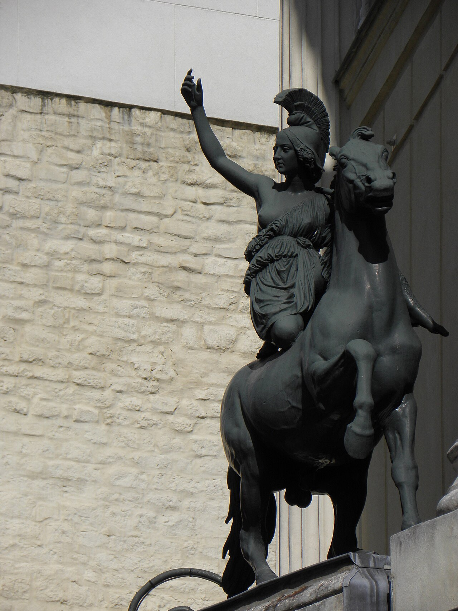

España compite con tres binomios en la tercera etapa del FEI Dressage Nations Cup en Lier
El Azelhof Equestrian Centre acoge del 20 al 24 de mayo el CDIO 4* de Lier, tercera prueba de la temporada 2026 del FEI Dressage Nations Cup. Nueve países han confirmado equipo, entre ellos España, que presenta una formación de tres binomios.

Foto: GO69 · CC BY-SA 3.0
El Azelhof Equestrian Centre acoge del 20 al 24 de mayo el CDIO 4* de Lier, tercera prueba de la temporada 2026 del FEI Dressage Nations Cup. Nueve países han confirmado equipo, entre ellos España, que presenta una formación de tres binomios.
La selección española está integrada por Francisco Benítez Sánchez, Juan Antonio Jiménez Cobo y Juan de Dios Ramírez García. Compiten frente a equipos completos de Alemania, Países Bajos, Gran Bretaña, Suecia, Bélgica, Australia, Suiza y Portugal, con figuras como Semmieke Rothenberger, Daphne van Peperstraten, Annabella Pidgley o Tinne Vilhelmson Silfvén entre los nombres más destacados de la prueba.
Lier es una de las citas más consolidadas del calendario continental de doma y suele atraer alineaciones de calidad porque se sitúa a pocas semanas del cierre de selección para el Campeonato del Mundo. La sede belga, con tres pistas internacionales y tradición en la organización de CDIO, ha vuelto a programar Gran Premio, Gran Premio Especial y Freestyle en el formato habitual.
Para España, la presencia en Lier funciona también como referencia de cara a la temporada europea de verano: los resultados en CDIO 4* puntúan en el ranking olímpico y permiten a los binomios competir en el formato de equipos frente a las potencias continentales.
— Redacción de Hípica al Día